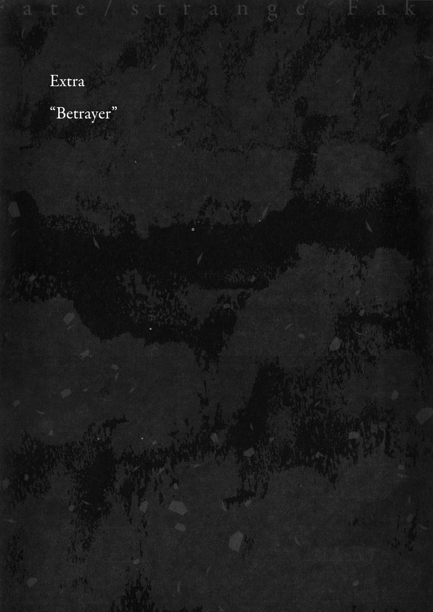

Uma fenda. Aquela cidade, erguendo-se da escuridão do interior ao redor, era certamente digna de ser chamada assim.
Não era uma barreira divisória, do tipo que separa dia e noite, luz e trevas. Pelo contrário, era uma barreira harmoniosa, que demarcava uma fronteira entre coisas da mesma natureza. Era isso que havia de estranho na cidade de Snowfield.
Era uma linha divisória, mas as coisas que separava não eram tão diferentes quanto magia e feitiçaria, nem tão parecidas quanto homens e feras.
Em certo sentido, era uma fronteira nebulosa, borrada pelas cores do amanhecer e do crepúsculo. Mas era mais do que um simples divisor. Era um nexo negro, nascido da mistura de pigmentos.
Em outras palavras, era a fronteira entre uma cidade e outra; a fronteira entre a natureza e o homem; a fronteira entre um homem e uma megalópole. Não era muito diferente daquele pântano indistinto que separa sonhos de mero sono.
O Oeste americano. A cidade ficava um pouco ao norte de Las Vegas. Seus arredores eram produto de um equilíbrio delicado. Ao norte, havia um imenso desfiladeiro, reminiscente do Grand Canyon. A oeste, uma floresta densa, algo incomum numa região tão árida. A leste, uma extensão de lagos e pântanos; ao sul, um vasto deserto.
Embora a cidade não tivesse o menor traço de terras agrícolas, era cercada por terras perfeitamente adequadas para agricultura em todas as quatro direções. De fato, só aquela cidade era uma existência estranha, destacando-se do entorno como um polegar machucado.
Uma cidade em expansão voltada para o futuro; um lugar com a mistura exata entre o natural e o artificial. Era assim que alguns poderiam descrever Snowfield, deslumbrados por sua beleza. Mas, na realidade, a cidade fora construída sobre noções arrogantemente arrogantes. Às vezes, essas noções eram evidentes; às vezes, não.
A mentira da terra ao redor era tão natural quanto podia ser. Era como se aquela cidade, aquela fenda, aquele nexo, aquela mistura de incontáveis cores, tivesse julgado a si mesma apta a harmonizar tudo ao seu redor. A cidade se tornava como um palco negro, avaliando tudo o que a cercava.
Segundo registros do próprio começo do século XX, a região era então lar de alguns povos indígenas aqui e ali, e praticamente de ninguém mais.
Mas, começando cerca de setenta anos atrás, a área começou a se desenvolver com rapidez. Quando o século XXI chegou, a terra havia passado por uma transformação total. Agora, era lar de uma cidade próspera
de 800 mil habitantes.
"Claro, um desenvolvimento rápido pode acontecer em qualquer lugar. O fato de nos terem pedido para investigar uma cidade aparentemente tão comum indica que devemos prestar atenção especial às origens dela." Resmungou assim um velho, trajando vestes azul-escuras.
O céu noturno estava escuro, e não havia uma única estrela. Parecia que as nuvens poderiam se romper a qualquer instante.
De um pequeno bosque na borda da vasta floresta a oeste da cidade, o velho espiava com um par de binóculos. Enquanto fitava a luz refletida pela aglomeração de arranha-céus ao longe, continuou, com desprezo evidente na voz.
"Hrm... os binóculos de hoje em dia realmente são bem úteis. Entram em foco com o apertar de um botão e, além disso, dão menos trabalho do que se dar ao esforço de mandar um familiar... Que época miserável em que vivemos."
Com uma expressão azeda, o velho falou ao jovem aprendiz que estava atrás dele. "Não acha, Faldeus?"
O homem chamado Faldeus estava ao lado de uma árvore, talvez a uns dois metros do velho. Com a voz carregada de dúvida, respondeu: "Deixa isso pra lá. Mais importante... precisamos mesmo nos preocupar tanto com aquilo? Com essa tal... 'Guerra do Santo Graal'?"
... A Guerra do Santo Graal ...
Era uma expressão que aparecia com frequência em contos de fadas e lendas de tempos passados. No instante em que aquelas palavras deixaram os lábios de Faldeus, seu mestre baixou os binóculos e falou com ele, exaustão visível nos olhos. "Faldeus, isso é uma piada?"
"Não... eu quis dizer...", gaguejou o aprendiz. Ele baixou o olhar, como se esperasse uma punição severa.
O velho balançou a cabeça e suspirou, com irritação na voz. "Eu não pensei que precisaria perguntar, mas... o quanto exatamente você sabe sobre a Guerra do Santo Graal?"
"Eu dei uma passada de olhos no material que me entregaram, mas..." "Então você já sabe o suficiente. Seja um simples boato entre crianças ou o delírio de um tabloide de terceira categoria, contanto que exista alguma possibilidade, por menor que seja, de um objeto descrito como Santo Graal vir a surgir, não podemos nos dar ao luxo de ignorá-lo."
"Pois ele é o verdadeiro desejo de todos os magos e, ao mesmo tempo, apenas um meio para o objetivo final."
Era uma vez... uma batalha. Ela aconteceu em certo país do Extremo Oriente. A batalha ocorreu numa cidade comum, sem que seus habitantes soubessem. No entanto, aquela batalha escondia um segredo verdadeiramente terrível. De fato, era uma guerra que trouxe à tona um milagre chamado Santo Graal.
O Santo Graal. Ele é um milagre eterno. É uma lenda. É uma relíquia do mundo dos deuses. É um ponto final. É esperança... e, por isso, buscá-lo é admitir o desespero. A própria identidade daquilo que se chama Santo Graal muda de tempos em tempos, de lugar em lugar e de pessoa em pessoa. Naquela guerra, o Santo Graal não era exatamente a "relíquia sagrada" como costuma ser imaginado.
Lá, dizia-se que o milagre chamado Santo Graal surgia na forma de um dispositivo onipotente capaz de conceder desejos.
Mas era apenas o que se dizia, pois, no momento em que a batalha para reivindicar o Graal começou, o dispositivo realizador de desejos chamado Santo Graal ainda não existia.
Antes que o próprio Graal surgisse, sete espíritos foram manifestados. De todas as histórias, tradições, magias e ficções deste mundo em todos os meios possíveis, "Heróis" eram escolhidos para serem invocados ao mundo presente como "Servos".
Eles formavam a base da Guerra do Santo Graal e eram absolutamente essenciais para a eventual invocação do Santo Graal.
Aqueles espíritos, seres incomensuravelmente mais fortes que humanos, eram chamados para destruir uns aos outros.
Os magos que invocavam esses Espíritos Heroicos eram conhecidos como "Mestres". Para conquistar o direito de obter o Graal, um direito que só poderia caber a um único indivíduo, eles também matavam uns aos outros. Essa carnificina é precisamente o que se conhece como Guerra do Santo Graal.
Os espíritos, uma vez mortos em batalha, fluíam para o receptáculo do Santo Graal; e, quando esse receptáculo se enchia, a máquina realizadora de desejos ficava completa. Esse era o sistema por trás da Guerra do Santo Graal.
Aqueles campos de batalha eram talvez os lugares mais mortais e mais tóxicos do mundo. Os magos participantes precisavam ocultar sua existência do restante do mundo, como sempre, e assim caminhavam silenciosamente pela noite, soltando as chamas da batalha sem serem vistos.
Como parte de sua missão de supervisionar objetos descritos como Santo Graal, a Igreja
enviava seu próprio supervisor. Aqueles campos de batalha pestilentos brilhavam com um verniz sanguíneo enquanto eram purificados por aqueles espíritos esmagadoramente poderosos.
E agora... a Guerra do Santo Graal, uma batalha travada cinco vezes numa ilha do Extremo Oriente. Algo surgiu numa cidade comum dos Estados Unidos. E esse algo veio acompanhado de presságios semelhantes aos que se viram naquela guerra travada no Extremo Oriente. Rumores sobre aquilo se espalharam entre os magos.
Como resultado, a Associação, a organização que reúne todos os magos, decidiu conduzir uma investigação secreta naquela cidade. E foi assim que um velho mago e seu discípulo foram enviados.
"...Muito bem. Seu conhecimento sobre a Guerra do Santo Graal é suficiente. No entanto, Faldeus. Não estou nem um pouco satisfeito com sua atitude displicente. Me decepciona que você saiba tanto e ainda assim se importe tão pouco. Dependendo de como isso se desenrolar, isso pode virar um assunto que diga respeito à Associação inteira. Se isso acontecer, aqueles desgraçados da Igreja certamente aparecerão. Então se recomponha, Faldeus."
"Mas é mesmo aqui?" retrucou Faldeus, cético apesar da reprimenda do mestre. "O sistema por trás da Guerra do Santo Graal foi construído pelos Einzbern e pelos Makiri. Ele não está ligado à terra que os Tohsaka ofereceram? Será que alguém realmente conseguiu replicar esse sistema... setenta anos atrás?"
"Se este for de fato o lugar... ah, sim. No pior dos casos, é possível que este lugar tenha sido construído unicamente para a Guerra do Santo Graal."
"Não pode ser!" "Acalme-se, isso foi apenas uma possibilidade. Afinal, dizem que as três famílias fundadoras fariam absolutamente qualquer coisa para alcançar o Graal. De todo modo, ainda não descobrimos quem está tentando recriar a Guerra do Santo Graal nesta cidade, Faldeus. Não me surpreenderia se o responsável fosse algum parente dos Einzbern ou dos Makiri. ...Há um Tohsaka na Torre do Relógio, então duvido que tenha sido obra deles."
O velho mago voltou aos binóculos, deixando em aberto a possibilidade de as famílias fundadoras estarem envolvidas.
Faltava talvez uma hora para a meia-noite e, ainda assim, as luzes da cidade brilhavam quase tanto quanto sempre. Snowfield erguia-se serena contra o céu nublado da noite, ostentando a própria existência.
Depois de examinar a área por alguns minutos, o velho se preparou para lançar um feitiço, como se fosse a única coisa razoável a fazer. O feitiço tornaria seus binóculos capazes de enxergar o fluxo e refluxo das linhas ley.
O aprendiz observou o mestre por trás e perguntou, de modo contido: "Se uma Guerra do Santo Graal realmente acontecer, com certeza nem nós, da Associação, nem os devotos da Igreja ficaremos quietos, certo...?"
"De fato... mas até agora só houve presságios. Lá na Torre do Relógio, Lord El-Melloi disse que havia irregularidades nas linhas ley, mas... bem, aquilo não passava de uma hipótese grosseira da parte dele, para não falar daquele aluno dele. Por isso estamos agora aqui, nesta terra, para verificar as previsões de El-Melloi."
Exausto, o velho mago soltou uma risada seca. Com uma mistura de irritação e desprezo permeando sua voz, falou e falou longamente, talvez com o discípulo, talvez consigo mesmo.
"É claro que nenhum Espírito Heroico pode ser invocado a menos que os preparativos para um Santo Graal já tenham sido feitos. Se um Espírito Heroico realmente for trazido à tona, nossas dúvidas serão dissipadas de imediato... mas eu preferiria que isso não acontecesse."
"É uma surpresa ouvir isso vindo do senhor." "Falando por mim, espero sinceramente que os rumores a respeito desta terra não passem disso. E, se alguma coisa realmente surgir aqui,
eu gostaria que fosse um Santo Graal falso." "Isso não contradiz o que o senhor dizia antes? Que o Santo Graal é o verdadeiro desejo de todos os magos e um meio para o objetivo final...?"
"Bem... suponho que sim", respondeu ele, franzindo a testa. "Mas mesmo que, falando hipoteticamente, exista aqui algo digno de ser chamado de verdadeiro Santo Graal, eu digo: ao inferno com isso! Me doeria ver o Graal aparecer num país de história tão escassa... Tenho certeza de que muitos magos fariam qualquer coisa para alcançar a Raiz, mas, sendo franco, eu não faria. Se eu chegasse à Raiz... seria como um moleque mal-educado enlameando meu quarto com os sapatos sujos. Isso não serviria para mim." Ele balançou a cabeça, exasperado.
"É mesmo?" Pela enésima vez naquele dia, o velho suspirou para o aprendiz. "De qualquer forma", pensou em voz alta, mudando de assunto, "nesta nova terra, fico me perguntando... que tipo de Servos poderia ser invocado?"
"De fato. Tirando Assassin, as identidades das outras cinco classes dependem inteiramente de seus invocadores, então não temos mesmo como prever o que vai acontecer."
Incapaz de conter a irritação com Faldeus, o mago o repreendeu asperamente: "Se você deixar
Assassin de lado, ainda restam seis classes, seu idiota! Não faz nem dois minutos que eu falei dos sete Servos! Chega dessas bobagens!"
Cada Espírito Heroico invocado na Guerra do Santo Graal é colocado em uma de sete classes. Saber. Archer. Lancer. Rider. Caster. Assassin. Berserker. Os Espíritos Heroicos são invocados em formas que correspondem às suas diferentes características especiais, refinando ainda mais suas habilidades. Um herói da espada pode ser invocado como Saber; um herói habilidoso com a lança, como Lancer.
Revelar o próprio Nome Verdadeiro equivale a divulgar as próprias fraquezas e habilidades especiais; por isso, os Servos geralmente são chamados pelos nomes de suas classes. Cada classe também é dotada de várias habilidades, cada uma capaz de influenciar o combate à sua maneira.
Por exemplo, Caster possui o poder de criação de Campos Limitados, enquanto Assassin tem a habilidade de Ocultação de Presença.
Em certo sentido, as várias classes são como peças de xadrez, cada uma com uma habilidade distinta. Mas cada jogador tem apenas uma peça. O tabuleiro é irregular, projetado para uma batalha campal. E cada peça tem a chance de controlar o tabuleiro, desde que quem a mova, seu Mestre, seja forte o bastante.
Foi esse princípio mais fundamental da Guerra do Santo Graal que Faldeus havia entendido errado. Seu mestre lamentou ter um discípulo tão indigno, mas
Faldeus permaneceu inexpressivo, apesar da bronca. Não parecia ter ignorado as palavras do mestre, nem que estivesse refletindo sobre seus deslizes. "Não, são seis classes ao todo, Senhor Rohngall", disse ele, numa voz suave e firme. "...O quê?"
De repente, um arrepio subiu pela espinha do velho mago, Rohngall. Foi a primeira vez que Faldeus o chamara pelo nome. Ele quis gritar com Faldeus, perguntar o que estava passando pela cabeça dele, mas o olhar gelado de Faldeus o deteve. Rohngall ficou em silêncio.
O semblante sem emoção de Faldeus se contorceu. "Na Guerra do Santo Graal travada no Japão, de fato existiam sete classes", disse ele, apontando friamente o erro do mestre. "Mas, nesta cidade, existem apenas seis. A classe Saber, a mais forte e mais adequada para o combate, não existe nesta Guerra do Santo Graal Falsa."
"Do que... você está falando?" Algo estalou na coluna dele.
Seus Circuitos Mágicos, seus nervos e seus vasos sanguíneos transmitiram todos um sinal de alerta, fazendo um sino de alarme soar em seus ouvidos.
Seu aprendiz, ou ao menos o homem que devia ter sido seu aprendiz até poucos minutos antes, deu um passo à frente. "O sistema criado pelos Makiri, pelos Einzbern e pelos Tohsaka era realmente extraordinário", disse ele, com a voz desprovida de emoção. "Por isso não conseguimos copiá-lo perfeitamente. Gostaríamos de ter começado a guerra com uma cópia exata... mas usamos a Terceira Guerra do Santo Graal como modelo, e aquela já era uma bagunça por si só, entende? É realmente uma pena."
Faldeus claramente parecia não ter nem passado dos vinte e poucos anos, e, ainda assim, narrava acontecimentos de mais de setenta anos atrás como se os tivesse visto com os próprios olhos.
Justo quando parecia que sua expressão ia se tornar sinistra, os cantos de seus lábios se retorceram, como se fossem puxados por fios invisíveis. Ainda tão calmo quanto sempre, ele falou do fundo do coração.
"O senhor chamou minha nação de 'jovem'. Mas é justamente por isso que deveria se lembrar, ancião."
"...Do quê?" "De que não se deve subestimar uma nação jovem."
crunch crunch crik crak creak crack crik crunch
Todos os ossos e músculos de Rohngall rangeram. Talvez porque ele estivesse reforçando a guarda, ou talvez porque estivesse simplesmente indignado.
"Seu desgraçado... quem... é você?" "Eu sou Faldeus, claro, meu caro. Claro, a única coisa que o senhor realmente sabe sobre mim é o meu nome. Mas, de qualquer forma, aprendi bastante sobre a Associação até agora. Suponho que eu deva lhe agradecer por isso."
"......" Com base em sua vasta experiência como mago, Rohngall soube imediatamente que o homem diante dele já não era seu aprendiz; era um inimigo.
Rohngall se preparou para matar Faldeus no instante em que aquele conhecido de longa data fizesse um movimento. E, ainda assim, os sinos de alarme continuaram ecoando em sua cabeça.
Ele conhecia precisamente a capacidade de Faldeus como mago. Não havia sinais de que Faldeus estivesse escondendo a própria força. Como espião experiente da Associação, ele podia ter certeza disso.
Ao mesmo tempo, porém, sua experiência como espião deixava claro que ele estava numa situação
perigosa.
"Então você era um infiltrado, de outra organização, enviado para se infiltrar na Associação. E era assim desde o instante em que disse que queria se tornar mago."
"Outra organização, é?" Com uma voz pegajosa, xaroposa, Faldeus corrigiu Rohngall. "A Associação parece estar sob a impressão de que um grupo de magos heterodoxos, não ligados a ela, é responsável pela criação desta Guerra do Santo Graal, mas... quer saber? Honestamente, como poderia... bem, deixa pra lá."
Como se quisesse indicar que não havia mais nada a ser dito, Faldeus deu um passo adiante. Ele não parecia particularmente ameaçador, nem se apresentava como um inimigo, mas ainda assim era evidente que estava tramando algo. Rohngall cerrou os dentes e baixou suavemente o centro de gravidade, preparando-se para responder a qualquer coisa que Faldeus fizesse.
"Não me subestime, criança." Ao dizer isso, preparou um plano para dar o primeiro passo naquele duelo entre magos, mas ele já havia perdido.
No momento em que começaram a tentar superar um ao outro como magos, Rohngall já havia sido derrotado pelo homem à sua frente. "Eu não estou subestimando o senhor."
...porque Faldeus, para começo de conversa, não tinha a intenção de enfrentá-lo como mago. "Vou acertá-lo com tudo o que tenho." Faldeus acendeu o isqueiro que trazia numa das mãos. Um charuto surgiu de repente na outra, que até então estava vazia.
Parecia aportação, mas não havia sinal algum de que ele tivesse usado Energia Mágica. Vendo a confusão de Rohngall, ele sorriu. Era um sorriso vindo do âmago de seu ser, um tipo de sorriso que Rohngall jamais tinha visto. Então continuou, dizendo: "Haha, isso foi só uma ilusão... um truque. Não magia."
"......?" "Ah, bem, veja, nós não somos exatamente uma organização de magos, especificamente. Espero que o senhor não fique decepcionado", disse Faldeus, sem a menor tensão na voz. Ele acendeu o charuto. "Respondemos aos Estados Unidos da América. Só acontece de termos alguns magos entre nós; nada mais."
Rohngall ficou em silêncio por alguns instantes e então respondeu. "Entendo. E me diga, então, o que esse charuto tem a ver com 'tudo o que você tem'?"
Rohngall estava tentando ganhar tempo para preparar sua magia. Mas, no instante em que pronunciou essas palavras...
Algo atravessou o lado de sua cabeça. Tudo foi decidido num instante.
Foi uma explosão úmida, pastosa. A bala desacelerou ao atravessar seu crânio. O chumbo se espalhou por toda parte, nadando num mar de matéria cerebral enquanto queimava sua mente.
Em vez de sair pelo outro lado do crânio, a bala ricocheteou dentro de sua cabeça, pondo um fim instantâneo e permanente ao velho.
E então, mesmo estando obviamente morto, dezenas de outras balas perfuraram seu corpo, como se quisessem garantir um golpe final.
As balas não foram disparadas todas do mesmo lugar. Devia haver mais de uma dúzia de atiradores de elite posicionados em pontos diferentes.
Aquilo claramente era exagero. Que forma implacável de destruir. Seus membros envelhecidos se dobraram e desabaram sem força, como uma marionete forçada a dançar rap.
"Obrigado pela dança. Foi bem engraçada." O corpo de Rohngall espirrou vermelho ao tombar no chão, fazendo um som molhado. Faldeus olhou para o cadáver recém-feito e bateu palmas devagar. "O senhor parece uns trinta anos mais jovem agora, Senhor Rohngall."
Alguns minutos depois... Faldeus estava imóvel diante do corpo do mestre, caído numa poça do próprio sangue. Mas a floresta ao redor havia mudado. Havia uma atmosfera estranha ao redor dele. Dezenas de homens com roupa camuflada saíram da floresta por trás de Faldeus. Cada um usava um balaclava preta e empunhava um fuzil de assalto com silenciador, cada um gravado com um desenho diferente; rústico, mas detalhado.
Suas raças mal podiam ser discernidas, quanto mais seus estados emocionais. Um deles se endireitou e caminhou até Faldeus, prestando continência enquanto falava. "Reportando, senhor. Situação normal. Não encontramos nada fora do comum."
"Bom trabalho, parceiro", respondeu Faldeus. Enquanto o subordinado falava de modo bastante formal, a voz de Faldeus soava calorosa.
Ele foi caminhando até o cadáver do velho mago, olhando-o de cima com um sorriso fraco no rosto.
Ainda de costas para os subordinados, disse: "Pois bem... como muitos de vocês provavelmente não estão familiarizados com esses chamados magos, deixem-me resumir a situação."
Os homens uniformizados já haviam se alinhado atrás dele. Em silêncio, escutaram Faldeus falar.
"Um mago não é um feiticeiro. Não encham a imaginação de criaturas de conto de fadas e feras lendárias. Pensem em algo mais como... ah, isso... algo mais na linha de um anime japonês ou de um filme de Hollywood. Só isso."
Ele se agachou diante do corpo do que um dia fora seu mestre, arrancou um pedaço e o ergueu com a própria mão.
Era uma cena bizarra, mas ninguém sequer arqueou uma sobrancelha. "Eles morrem quando são mortos, e ataques físicos funcionam razoavelmente bem contra eles. Claro, existem alguns que se cobrem com um véu de mercúrio forte o bastante para desviar milhares de balas. Há outros que conseguem transferir a consciência e prolongar a vida com a ajuda de insetos embutidos no corpo. Mas... bem, o primeiro tipo não tem defesa contra um rifle antitanque, enquanto o segundo quase certamente não sobreviveria a um míssil de precisão."
Talvez eles tenham pensado que Faldeus estava brincando. Os homens de camuflagem se esforçaram para conter os risos.
Mas, no instante em que ouviram o que Faldeus disse em seguida, todos ficaram em silêncio.
"Há exceções, é claro.... Como este sujeito aqui, que nem sequer estava aqui de verdade."
"...Posso pedir que elabore isso, Senhor Faldeus?" perguntou um dos homens armados, sempre tão formal. Faldeus soltou uma risada e atirou um pedaço da carne do cadáver para ele.
O homem o pegou de maneira contida. Olhou para o pedaço de carne, provavelmente parte de um dedo, e arregalou os olhos. "...O quê?"
Sob a luz da lanterna, era evidente que um osso branco se projetava entre os tendões vermelhos da carne.
Mas havia algo errado. Algo diferente da carne de um humano de verdade. Fios transparentes, não muito diferentes de cabos de fibra óptica, saíam da carne e se retorciam de maneira repulsiva.
"Um ciborgue, por assim dizer? Bem, nós chamamos isso de boneco. O Senhor Rohngall é um investigador terrivelmente cauteloso. Não é tolo a ponto de vir até aqui com o corpo verdadeiro. Neste exato momento, provavelmente está numa das filiais da Associação ou em seu próprio ateliê. Aposto que ele deve estar em polvorosa agora mesmo!"
"Um boneco...? Isso é absurdo!" "É uma técnica até espetacular, mas note que ele não conseguiu fazê-lo parecer perfeitamente humano. A forma de um velho funciona bem para disfarçar essas imperfeições, imagino. Ouvi dizer que existe uma bonequeira cujas bonecas são completamente indistinguíveis dos corpos em que se baseiam... passariam até num teste de DNA." Faldeus falou e falou, soando desinteressado, como se fosse um terceiro sem qualquer envolvimento.
O soldado franziu a testa. "Nesse caso, ele não teria ouvido tudo o que o senhor disse antes?"
perguntou a Faldeus, seu oficial comandante.
"Teria. Exatamente como planejado." "Er...?" "Eu me dei ao trabalho de me gabar como um tolo antes de matá-lo justamente para garantir que a Associação ficasse sabendo de tudo o que eu disse." Faldeus ficou de pé sobre o corpo falso, deitado numa poça de sangue falso, e ergueu o olhar para o céu escuro quando a garoa começou a cair. Satisfeito, murmurou: "Considerem isto uma declaração... nosso aviso aos magos."
E isso marcou o começo... O começo do banquete de homens e Espíritos Heroicos; o começo da Guerra do Santo Graal Falsa.